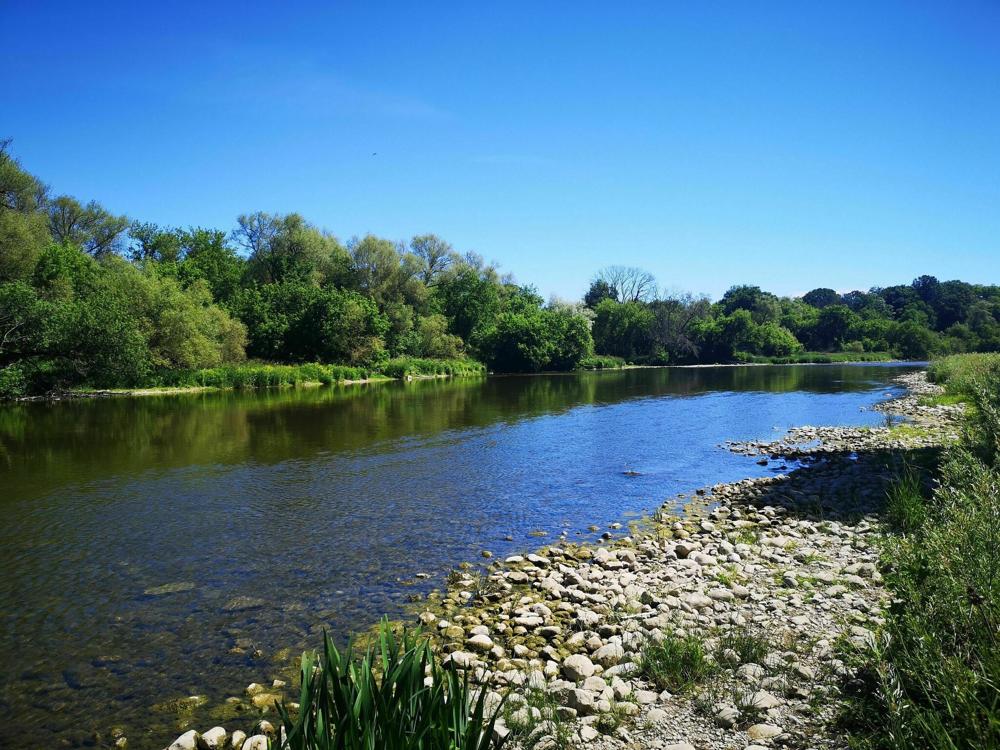
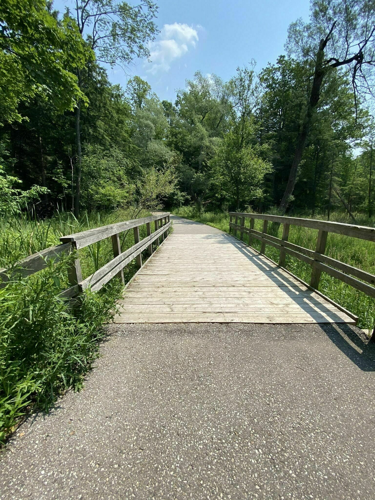
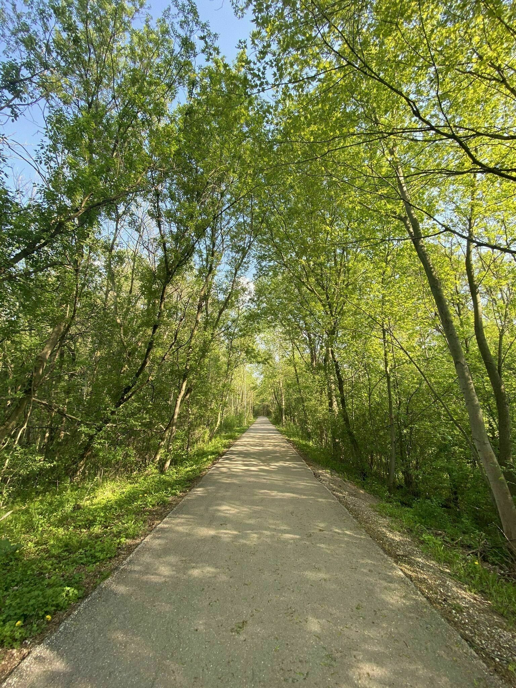

Homer Watson Park Trails is a 4.5 kilometer lightly trafficked out and back trail located near Kitchener, Ontario, Canada that features a lake and is good for all skill levels. The trail offers a number of activity options and is accessible year-round. Dogs are also able to use this trail but must be kept on leash.
Length
4.5 Km
Elevation Gain
122 m
Route Type
Out and Back
Gallery
  